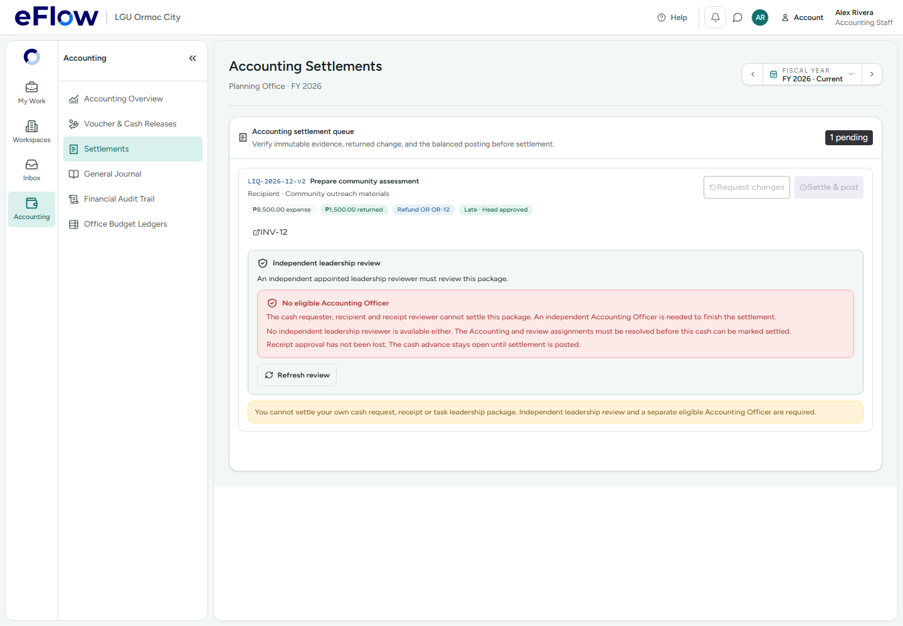
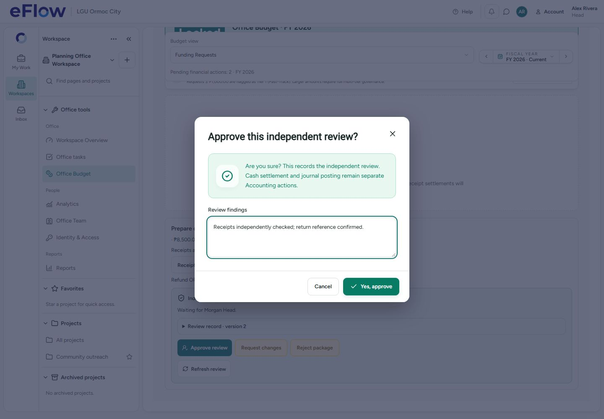

Settlement blocker — desktop evidence
Intercepted synthetic browser cases. The actual PC-00001 was inspected in the database and remains open under the preserved independence rule.
Report and demo instructions
Clear missing-actor error, with self-settlement blocked

Independent Head review before separate Accounting settlement
